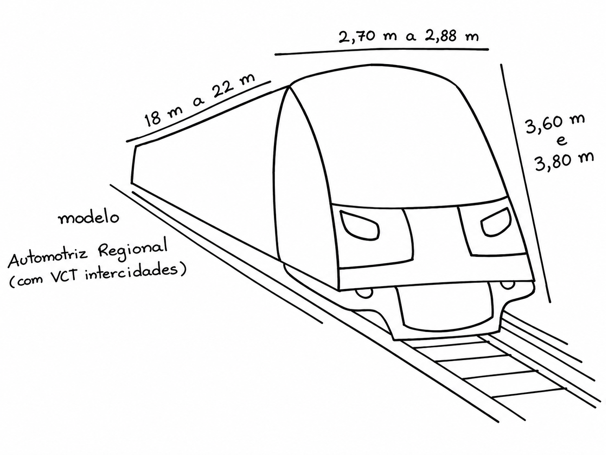

Objetivo: Conectar cidades menores e regiões produtoras do interior do Parań aos polos universitários e industriais, democratizando o acesso á educação superior e barateando o escoamento da produção local sem aumentar impostos.

Mobilidade Ferroviária Regional para Democratização do Acesso a Educação e Desensvolvimento sustentável.
Eixo Centro-SUl
Ligando a região produtora de Irati ao polo universitário e industrial de Ponta Grossa (ou estendendo até Guarapuava.)
Eixo Campos Gerais
Aproveitando os ramais antigos na região de Piraĩ do Sul, Arapoti,Tibagi, próximos a polos madeireiros e agrícolas, conectando ao eixo central de Ponta Grossa.
Integração Rural
Ônibus escolares curtos das prefeituras trazem os estudantes das comunidades e distritos até a estação da cidade (trajeto de 10 a 20 minutos) com bilhete integrado.
Composição leve formada por 1 carro motorizado (movido a biodiesel ou diesel limpo). Puxando a 2 a 3 vagões reformados (capacidade máxima de 100 a 120 lugares, todos sentados)
Acabamento Interno e Externo
Uso de madeira tratada certificada produzida nas serrarias da propria região, piso vinílico amadeirado antiderrapante, iluminação LED em tom quente (amarelado) e janelas amplas.
Divisão de Vagões
VAGÂO 1- Poltronas individuais nas janelas com mesinha fixa para estudo focado, leitura.
VAGÂO 2- Mesas de madeira fixas com 4 lugares com suporte para copos, WIFI gratuito via antena veicular 4G a 5G de alto alcance.
Lazer
COFFE (autoatendimento)
Bancada fixa de madeira com garrafas térmicas travadas (café preto, água, leite, chá,